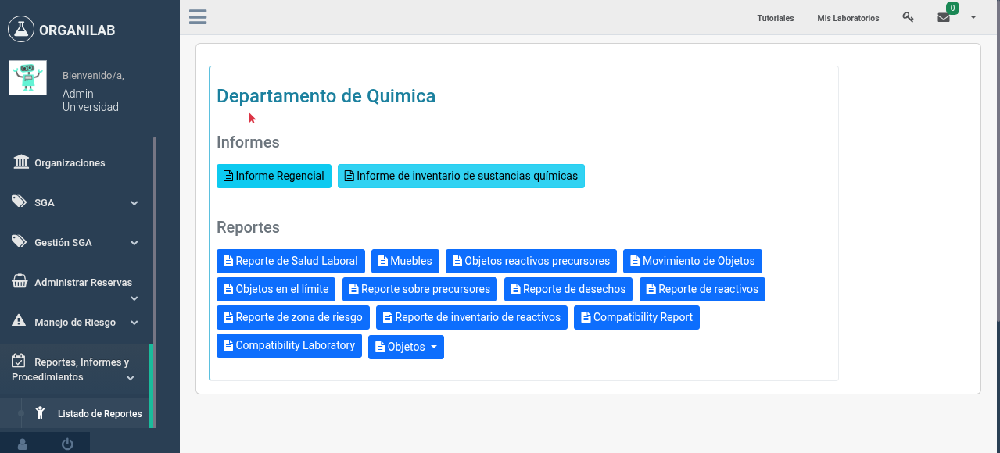

3. Reportes Automáticos
Organilab genera automáticamente varios tipos de reportes para cumplir con requisitos regulatorios, registrar históricos de inventario y facilitar la gestión de riesgos. Estos reportes se crean sin intervención manual y quedan disponibles para consulta en el sistema.
Reportes de Precursores Químicos (Mensual)
El primer día de cada mes a las 00:02, el sistema genera automáticamente un reporte de precursores químicos para todos los laboratorios que manejan este tipo de sustancias. Los precursores químicos son sustancias controladas que requieren un seguimiento estricto por parte de las autoridades regulatorias.
Contenido del Reporte
Cada reporte de precursores (PrecursorReport) contiene valores detallados (PrecursorReportValues) para cada sustancia controlada. Los campos que se registran para cada precursor son:
- Saldo anterior (previous_balance)
- La cantidad del precursor al inicio del mes, tomada del saldo final del mes anterior.
- Nuevo ingreso (new_income)
- Cantidad de precursor que ingresó al laboratorio durante el mes, ya sea por compra, donación o transferencia.
- Gasto del mes (month_expense)
- Cantidad de precursor consumida o utilizada durante el mes en las actividades del laboratorio.
- Saldo final (final_balance)
- Cantidad restante al cierre del mes. Se calcula como: saldo anterior + nuevo ingreso - gasto del mes.
- Proveedores (providers)
- Lista de proveedores que suministraron el precursor durante el mes.
- Facturas (bills)
- Referencias a las facturas o comprobantes de compra asociados a los ingresos del mes.
Numeración Consecutiva
Cada reporte de precursores recibe un número consecutivo automático. Esta numeración es continua y no se reinicia, lo que permite mantener una trazabilidad completa de todos los reportes generados. Los entes reguladores pueden solicitar reportes por número consecutivo para auditorías.

Vista del reporte mensual de precursores mostrando los valores de cada sustancia controlada
Reportes de Establecimientos (Diario)
Cada día a las 16:45, el sistema genera reportes de establecimientos relacionados con la gestión de riesgos. Estos reportes recopilan información sobre las condiciones de seguridad, incidentes registrados y el estado general de las zonas de riesgo de cada establecimiento.
Los reportes de establecimientos son parte del módulo de gestión de riesgos de Organilab y permiten:
- Documentar el estado diario de las condiciones de seguridad
- Registrar automáticamente las evaluaciones de riesgo completadas
- Generar un histórico para análisis de tendencias
- Facilitar la elaboración de informes periódicos para autoridades

Vista del listado de reportes de establecimientos generados automáticamente
Informes Periódicos (InformScheduler)
Además de los reportes con horario fijo, Organilab permite configurar informes periódicos personalizados mediante el InformScheduler. Esta funcionalidad permite a los administradores definir qué informes se deben generar, con qué frecuencia y para qué ámbito del sistema.
Cómo Configurar un Informe Periódico
- Acceda a la configuración de informes — Navegue a la sección de administración de informes periódicos dentro de su organización.
- Cree un nuevo programador de informes — Seleccione la opción para crear un nuevo InformScheduler. Deberá definir el tipo de informe que desea generar.
- Configure la periodicidad — Establezca la frecuencia con la que se debe generar el informe: diaria, semanal, mensual o con un intervalo personalizado.
- Defina el alcance — Seleccione los laboratorios, organizaciones o áreas que debe cubrir el informe.
- Active el programador — Una vez configurado, active el programador para que el sistema comience a generar los informes automáticamente según el periodo definido.
Registro de Stock Máximo Diario (10:00)
Cada día a las 10:00, el sistema registra la cantidad máxima de cada reactivo en cada laboratorio. Este registro crea un histórico llamado ObjectMaximumLimit que permite conocer cuál fue el inventario máximo registrado en un día específico.
Este registro es útil para:
- Control regulatorio — Demostrar que las cantidades almacenadas no exceden los límites permitidos por normativa
- Análisis de consumo — Comparar los niveles de stock a lo largo del tiempo para identificar patrones de uso
- Planificación de compras — Determinar los niveles óptimos de inventario basándose en datos históricos
- Auditorías — Proporcionar evidencia documentada de los niveles de inventario en cualquier fecha
Resumen de Reportes Automáticos
| Tipo de Reporte | Frecuencia | Resultado |
|---|---|---|
| Precursores químicos | Mensual (día 1, 00:02) | Reporte con saldos, ingresos, gastos, proveedores y facturas por sustancia |
| Establecimientos (riesgo) | Diaria (16:45) | Reporte de condiciones de seguridad y evaluaciones de riesgo |
| Informes periódicos | Configurable (InformScheduler) | Informes personalizados según la configuración del administrador |
| Stock máximo diario | Diaria (10:00) | Registro histórico de la cantidad máxima de cada reactivo por laboratorio |